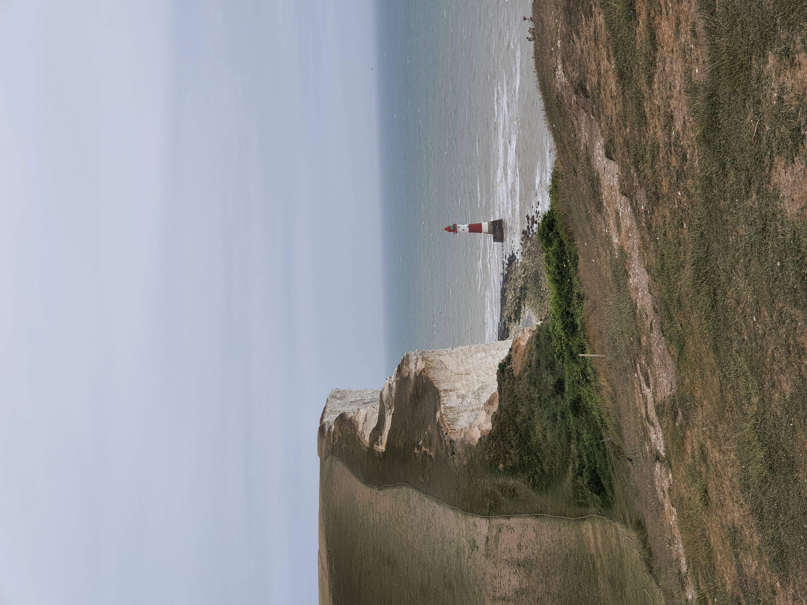
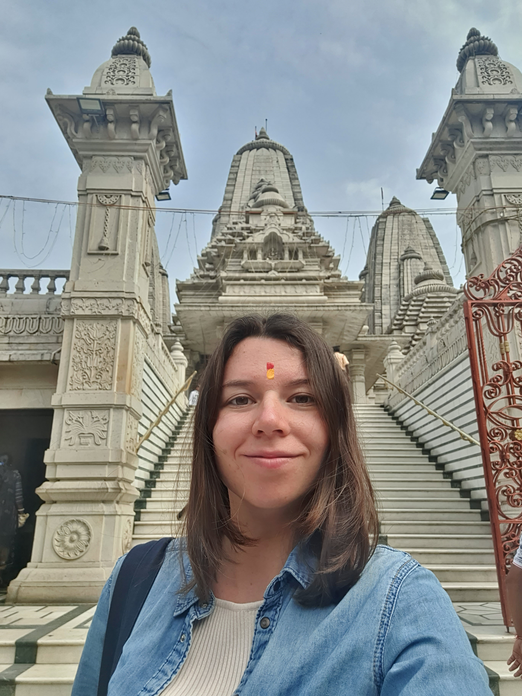

Interests

Sports
I am quite an outgoing and sporty person. Since my school years, I have been into water sports — swimming, surfing, and windsurfing. During my Bachelor's, I did athletics, which grew into functional training combined with yoga and pilates. And living in Germany, I love hiking.
Running
[Your text about running — races, routes, what it gives you.]


Travelling
I love exploring new countries, cultures, and cuisines.
(as of March 2026)


Photography
[Your text about photography — what you like to shoot, camera, favourite places.]
Reading
I cannot imagine my life without reading, especially philosophical books. As a person working with AI and trying to find a balance between static human life and disruptive innovations, I am fascinated by sci-fi and discussions about human nature. Feminism is also a huge part of my life.


Food & Brunch
One of my regular ways to spend a weekend: brunch with friends in a new place.
[More text if you like.]